第4單元整數四則運算五上
交換律、結合律與分配律
數4-1 觀念教導（一）善用運算規則調整順序或拆合數字，就能讓複雜的四則運算變簡單！
【一、交換律與結合律】
- 1. 交換律：甲 ＋ 乙 ＝ 乙 ＋ 甲 甲 × 乙 ＝ 乙 × 甲
例 (1) 12 ＋ 35 ＝ 35 ＋ 12 ＝ 47例 (2) 25 × 46 ＝ 46 × 25 ＝ 1150
- 2. 結合律：甲 ＋ 乙 ＋ 丙 ＝ 甲 ＋ (乙 ＋ 丙) 甲 × 乙 × 丙 ＝ 甲 × (乙 × 丙)
例 (1) 257 ＋ 924 ＋ 76 ＝ 257 ＋ (924 ＋ 76) ＝ 257 ＋ 1000 ＝ 1257例 (2) 734 × 25 × 4 ＝ 734 × (25 × 4) ＝ 734 × 100 ＝ 73400
【二、乘法對加（減）法的分配律】
- 甲 × (乙 ± 丙) ＝ 甲 × 乙 ± 甲 × 丙 (乙 ± 丙) × 甲 ＝ 乙 × 甲 ± 丙 × 甲
例 (1) 25 × 42 ＝ 25 × (40 ＋ 2) ＝ 25 × 40 ＋ 25 × 2 ＝ 1000 ＋ 50 ＝ 1050例 (2) 243 × 372 − 243 × 172 ＝ 243 × (372 − 172) ＝ 243 × 200 ＝ 48600
【三、除法對加（減）法的分配律】
- 1. 除數相同可合併：甲 ÷ 丙 ± 乙 ÷ 丙 ＝ (甲 ± 乙) ÷ 丙
例：456 ÷ 19 ＋ 304 ÷ 19 ＝ (456 ＋ 304) ÷ 19 ＝ 760 ÷ 19 ＝ 40
- 2. 被除數相同、除數不同「不能」合併：甲 ÷ 乙 ± 甲 ÷ 丙 ≠ 甲 ÷ (乙 ± 丙)
四則運算法則與加／去括號
數4-1 觀念教導（二）記住「括號前面是減號或除號，括號裡面要變號」，就不怕算錯！
【一、基本運算順序】
- 1. 先乘除，後加減。
- 2. 有括號時：先計算 （ ） 中的數，再算 〔 〕 中的數，最後算 ｛ ｝ 中的數。
【二、加減混合：加括號與去括號】
- 一般先求括號內的結果，但有時也可先去括號，再進行運算。
- 括號前為「−」時，括號內的運算符號要變號（＋ 變 −，− 變 ＋）。
- 括號前為「＋」時，括號內的運算符號不用變號。
例 (1) 9752 − (3752 ＋ 4500) ＝ 9752 − 3752 − 4500 ＝ 6000 − 4500 ＝ 1500例 (2) 846 ＋ 479 − 425 ＝ 846 ＋ (479 − 425) ＝ 846 ＋ 54 ＝ 900
【三、乘除混合：加括號與去括號】
- 「×」後面加上 （ ） 時，括號內的運算符號不變；「÷」後面加上 （ ） 時，括號內的運算符號要變號（× 變 ÷，÷ 變 ×）。
- (1) 甲 ÷ 乙 ÷ 丙 ＝ 甲 ÷ (乙 × 丙)
例：9500 ÷ 25 ÷ 4 ＝ 9500 ÷ (25 × 4) ＝ 9500 ÷ 100 ＝ 95
- (2) 甲 × 乙 ÷ 丙 ＝ 甲 × (乙 ÷ 丙)
例：665 × 84 ÷ 42 ＝ 665 × (84 ÷ 42) ＝ 665 × 2 ＝ 1330
- (3) 甲 ÷ 乙 × 丙 ＝ 甲 ÷ (乙 ÷ 丙)
例：2838 ÷ 66 × 33 ＝ 2838 ÷ (66 ÷ 33) ＝ 2838 ÷ 2 ＝ 1419
乘法數字謎
數4-6（1）在裡填入適當的數字，使乘法直式成立。
1先想一想
💡提示 1
先看個位： × 7 的個位要是 6。7 的乘法表裡，哪一個個位是 6？
💡提示 2
再找乘數的十位：積是 2436，試著算算 428 × 50 和 428 × 60，哪一個比較接近？
2解題影片
 助手 Y：想好了嗎？一起來看解題影片吧！
助手 Y：想好了嗎？一起來看解題影片吧！3文字詳解
打開一步一步的算法
- 乘法數字謎：先從個位下手
- × 7 的個位是 6
- 只有 7 × 8 ＝ 56 → 是 8
- 428 × 7 ＝ 2996（第一行部分積）
- 積是 2436，大約兩萬四千三百多
- 428 × 50 ＝ 21400；428 × 60 ＝ 25680 太大
- 十位是 5 → 428 × 57
- 428 × 5 ＝ 2140（往左移一格寫）
- 2996 ＋ 21400 ＝ 24396
- 答案：428 × 57 ＝ 24396 ✓
答案：428 × 57 ＝ 24396
 助手 Y：驗算通過，才算破案！
助手 Y：驗算通過，才算破案！除法數字謎
數4-6（2）在裡填入適當的數字，使除法直式成立。
1先想一想
💡提示 1
從最後一步往回推：最後相減等於 0，表示上下兩個數完全一樣。
💡提示 2
29 是「除數 4 × 7」算出來的。7 × 的個位是 9， 會是多少？
2解題影片
助手 Y：想好了嗎？一起來看解題影片吧！3文字詳解
打開一步一步的算法
- 除法數字謎：從最後一步往回推
- 最後相減等於 0 → 上下兩個數一樣
- 十位是 2、個位是 9 → 兩個數都是 29
- 29 是「除數 × 7」算出來的
- 7 × 的個位是 9 → 只有 7 × 7 ＝ 49
- 除數是 47，47 × 7 ＝ 329
- 9 是移下來的 → 被除數個位是 9
- 前面的 32 是第一次相減的餘數
- 個位：4 − ＝ 2 → 是 2
- 47 的倍數中，只有 47 × 6 ＝ 282 合格
- 商是 67；282 ＋ 32 ＝ 314
- 被除數是 3149
- 驗算：47 × 67 ＝ 3149 ✓
答案：3149 ÷ 47 ＝ 67
助手 Y：驗算通過，才算破案！雙數列對應相減巧算
數4-5 精熟四、5計算：(8888 ＋ 8886 ＋ 8884 ＋ …… ＋ 8002) − (2 ＋ 4 ＋ 6 ＋ …… ＋ 888) ＝？
1先想一想
💡提示 1
把後面括號反過來寫成 (888 ＋ 886 ＋ …… ＋ 2)，和前面括號上下對齊相減，每一對差都是多少？
💡提示 2
數一數偶數 2、4、6……888 一共有幾個數（888 ÷ 2 ＝ 444），再乘以每對的差 8000！
2解題影片
助手 Y：想好了嗎？一起來看解題影片吧！3文字詳解
打開一步一步的算法
- 利用加法交換律，將後面括號反寫成 (888 ＋ 886 ＋ 884 ＋ …… ＋ 2)
- 去括號並兩兩對應相減：(8888 − 888) ＋ (8886 − 886) ＋ …… ＋ (8002 − 2)
- 每一對相減的結果全部都是 8000
- 看後面括號的偶數 2、4、……、888，共有 888 ÷ 2 ＝ 444 個數（前面括號也剛好 444 個數）
- 總和 ＝ 8000 × 444 ＝ 3552000
答案：3552000
助手 Y：驗算通過，才算破案！八個一組週期加減巧算
數4-5 精熟四、6計算：2008 ＋ 2007 ＋ 2006 ＋ 2005 − 2004 − 2003 − 2002 − 2001 ＋ …… ＋ 8 ＋ 7 ＋ 6 ＋ 5 − 4 − 3 − 2 − 1 ＝？
1先想一想
💡提示 1
觀察符號規律：每 4 個加、接著 4 個減，所以把每 8 個連續的數框成一組！
💡提示 2
第一組裡 (2008−2004)＋(2007−2003)＋(2006−2002)＋(2005−2001) ＝ 16，想想看 2008 個數可以分成幾組？
2解題影片
助手 Y：想好了嗎？一起來看解題影片吧！3文字詳解
打開一步一步的算法
- 觀察符號規律：4 個加、4 個減，每 8 個數分成 1 組
- 每組兩兩配對相減：(2008−2004)＋(2007−2003)＋(2006−2002)＋(2005−2001) ＝ 4＋4＋4＋4 ＝ 16
- 每一組的結果全部固定都是 16（最後一組 8＋7＋6＋5−4−3−2−1 也是 16）
- 從 2008 到 1 共 2008 個數，共有 2008 ÷ 8 ＝ 251 組
- 總和 ＝ 16 × 251 ＝ 4016
答案：4016
助手 Y：驗算通過，才算破案！二次分配律巧算
數4-6 資優二、5計算：1726 × 119 − 226 × 119 ＋ 1726 × 31 − 226 × 31 ＝？
1先想一想
💡提示 1
先分成前兩項與後兩項：前兩項都有 ×119、後兩項都有 ×31，各自用乘法分配律抽出來！
💡提示 2
抽出來後會發現都是 1500×119 ＋ 1500×31，再把 1500 抽出來做第二次分配律！
2解題影片
助手 Y：想好了嗎？一起來看解題影片吧！3文字詳解
打開一步一步的算法
- 第一次分配律（前兩項抽 119、後兩項抽 31）：(1726 − 226) × 119 ＋ (1726 − 226) × 31
- 括號內剛好等於 1500 → 1500 × 119 ＋ 1500 × 31
- 第二次分配律（抽出 1500）：1500 × (119 ＋ 31) ＝ 1500 × 150
- 15 × 15 ＝ 225，再補上三個 0 → 225000
答案：225000
助手 Y：驗算通過，才算破案！倍數變形＋分配律巧算
數4-6 資優二、6計算：99999 × 27 − 33333 × 51 ＋ 66666 × 35 ＝？
1先想一想
💡提示 1
觀察 99999、33333、66666 三個大數，它們全部都是哪一個數的倍數？
💡提示 2
把 99999×27 改寫成 33333×(3×27) ＝ 33333×81，66666×35 改寫成 33333×70，再抽出 33333！
2解題影片
助手 Y：想好了嗎？一起來看解題影片吧！3文字詳解
打開一步一步的算法
- 觀察倍數關係：99999 ＝ 33333 × 3；66666 ＝ 33333 × 2
- 用乘法結合律改寫：33333 × (3×27) − 33333 × 51 ＋ 33333 × (2×35)
- 化簡得：33333 × 81 − 33333 × 51 ＋ 33333 × 70
- 用乘法分配律抽出 33333：33333 × (81 − 51 ＋ 70) ＝ 33333 × 100 ＝ 3333300
答案：3333300
助手 Y：驗算通過，才算破案！襪子雙重優惠（3雙140＋買十送一）
數4-7 資優三、1一雙襪子 49 元，任選 3 雙只要 140 元，開幕期間再加碼買十送一。身上帶 800 元，最多可以買到幾雙襪子（包含贈送的）？
1先想一想
💡提示 1
3 雙 140 元比單買 3 雙（147 元）便宜，先算 800 ÷ 140 可以買幾組、剩多少元？
💡提示 2
剩下的 100 元可以單買 2 雙，實際買了 17 雙；別忘了滿 10 雙還會再送 1 雙！
2解題影片
助手 Y：想好了嗎？一起來看解題影片吧！3文字詳解
打開一步一步的算法
- 先盡量買「3 雙 140 元」：800 ÷ 140 ＝ 5（組）…… 100（元）
- 5 組共有 5 × 3 ＝ 15（雙）
- 剩下的 100 元單買：100 ÷ 49 ＝ 2（雙）…… 2（元）
- 實際付錢買了 15 ＋ 2 ＝ 17（雙）
- 開幕買十送一：17 ÷ 10 ＝ 1 …… 7 → 送 1 雙（買不到 20 雙，最多送 1 雙）
- 總計：17 ＋ 1 ＝ 18（雙）
答案：18 雙
助手 Y：驗算通過，才算破案！甲乙丙的錢（和倍＋內部給錢）
數4-7 資優三、2甲、乙共有 528 元，如果乙給甲 36 元後，乙的錢剛好是甲的 5 倍；又丙的錢是甲原有的錢加上 28 元後的 3 倍，則甲、乙、丙各有多少元？
1先想一想
💡提示 1
乙給甲 36 元後，兩人的總和還是 528 元！這時乙是甲的 5 倍，合起來共有 1 ＋ 5 ＝ 6 份。
💡提示 2
先算 1 份（後來的甲）＝ 528 ÷ 6 ＝ 88 元，再減掉乙給的 36 元就是原本的甲！
2解題影片
助手 Y：想好了嗎？一起來看解題影片吧！3文字詳解
打開一步一步的算法
- 乙給甲 36 元，兩人總和 528 元不變；後來乙是甲的 5 倍，共 1 ＋ 5 ＝ 6 份
- 後來的甲 ＝ 528 ÷ 6 ＝ 88（元）
- 原本的甲 ＝ 88 − 36 ＝ 52（元）
- 原本的乙 ＝ 528 − 52 ＝ 476（元）（驗算：476−36＝440，440÷88＝5 倍 ✓）
- 丙 ＝ (52 ＋ 28) × 3 ＝ 80 × 3 ＝ 240（元）
答案：甲 52 元、乙 476 元、丙 240 元
助手 Y：驗算通過，才算破案！醉漢進 5 步退 2 步問題
數4-7 資優三、4有一醉漢某天在酒店喝醉酒，走路每前進 5 步就退 2 步。從酒店到他家有 180 步的路程，請問這名醉漢從酒店走到家，共走了多少步？
1先想一想
💡提示 1
千萬別直接算 180 ÷ 3！先扣掉最後一次往前走的 5 步：180 − 5 ＝ 175 步。
💡提示 2
175 ÷ 3 ＝ 58 餘 1：58 循環只到 174 步（＋5＝179 還沒到家！），所以必須走 59 個循環到 177 步，最後再走 3 步到家！
2解題影片
助手 Y：想好了嗎？一起來看解題影片吧！3文字詳解
打開一步一步的算法
- 1 個循環共走 5 ＋ 2 ＝ 7（步），實際前進 5 − 2 ＝ 3（步）
- 最後一次到家後不再退 2 步，先扣掉最後最多前進的 5 步：180 − 5 ＝ 175（步）
- 175 ÷ 3 ＝ 58 …… 1（58 循環前進 174 步，再進 5 步只到 179 步還沒到家，仍須退 2 步）
- 因此需要 58 ＋ 1 ＝ 59 個完整循環，到達 59 × 3 ＝ 177（步）
- 最後再前進 180 − 177 ＝ 3（步）即到家，總步數 ＝ 59 × 7 ＋ 3 ＝ 416（步）
答案：416 步
助手 Y：驗算通過，才算破案！大冠練書法宣紙問題（104 會考）
數4-7 ★素養新試界大冠買了一包宣紙練習書法，每星期一寫 1 張，每星期二寫 2 張……每星期日寫 7 張。若大冠從某年的 5 月 1 日開始練習，到 5 月 30 日練習完後，累積寫完的宣紙總數已超過 120 張，則 5 月 30 日可能為星期幾？
1先想一想
💡提示 1
不管 5 月 1 日是星期幾，連續 7 天都是週一到週日各一天（28 張），30 天＝4 週多 2 天，4 週共寫 112 張。
💡提示 2
總數要「超過 120 張」（＞120），多出的連續 2 天總和必須 ＞ 8 張（小心：週日 7 ＋ 週一 1 ＝ 8 剛好 120 張，沒有超過！）。
2解題影片
助手 Y：想好了嗎？一起來看解題影片吧！3文字詳解
打開一步一步的算法
- 無論從星期幾開始，每連續 7 天共寫 1＋2＋3＋4＋5＋6＋7 ＝ 28（張）
- 5 月 1 日到 5 月 30 日共 30 天：30 ÷ 7 ＝ 4（週）…… 2（天）
- 4 週共寫 28 × 4 ＝ 112（張），要超過 120 張，多出的 2 天總和必須 ＞ 120 − 112 ＝ 8（張）
- 檢查連續 2 天（5/29＋5/30）：週四＋週五＝9、週五＋週六＝11、週六＋週日＝13（均 ＞ 8 ✓）
- 週日＋週一 ＝ 7＋1 ＝ 8（剛好 120 張，未超過 ✗）；其餘皆 ＜ 8
- 故 5 月 30 日可能為星期五、星期六或星期日
答案：星期五、星期六或星期日
助手 Y：驗算通過，才算破案！第5單元立體圖形五上
認識角柱與角錐
數5-1 觀念教導（一）角柱、角錐都是「看底面的形狀」來命名：底面是三角形就叫三角柱、三角錐。
【一、各部分的名稱】
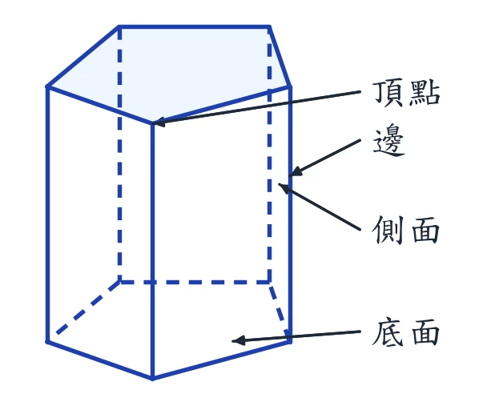
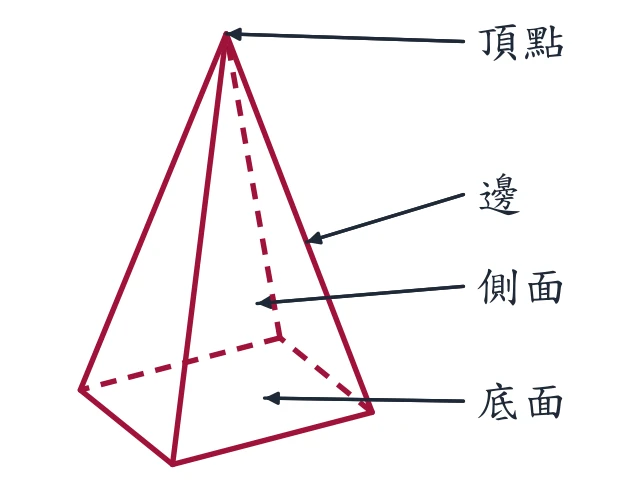
- 柱體 2 個底面之間的距離，叫做柱體的高。
【二、角柱和角錐比一比（底面是 n 邊形）】
| 角柱 | 角錐 | |
|---|---|---|
| 頂點個數 | 底面邊數 × 2 | 底面邊數 ＋ 1 |
| 邊的個數 | 底面邊數 × 3 | 底面邊數 × 2 |
| 底面 | 2 個，互相平行且全等 | 1 個 |
| 側面形狀 | 長方形 | 三角形 |
| 面的總數 | 底面邊數 ＋ 2 | 底面邊數 ＋ 1 |
| 垂直關係 | 底面和側面互相垂直 | 沒有互相垂直或平行的面 |
展開圖與表面積
數5-2 觀念教導（二）把立體圖形「攤平」就是展開圖；展開圖每一塊的面積加起來，就是表面積。
【一、角柱與角錐的展開圖】
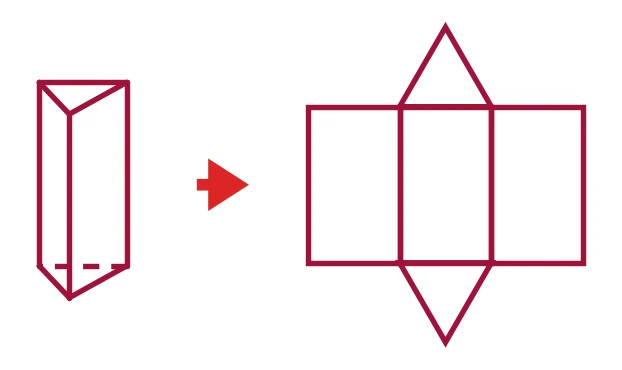
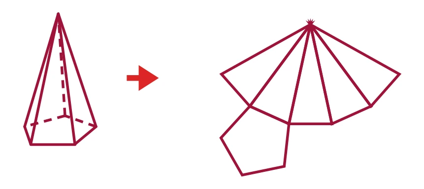
【二、圓柱與圓錐的展開圖】
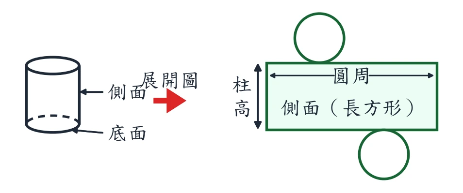
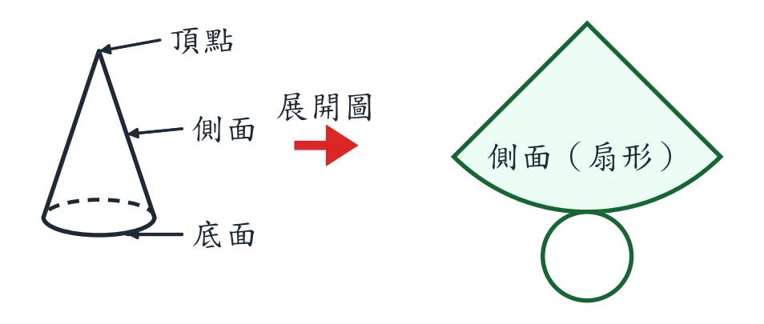
- 圓柱：側面長方形的長 ＝ 底面的圓周，寬 ＝ 柱高。
- 圓錐：側面扇形的弧長 ＝ 底面的圓周，半徑 ＝ 頂點到圓周的距離。
【三、表面積公式】
- 正方體表面積 ＝ 邊長 × 邊長 × 6
- 長方體表面積 ＝（長 × 寬 ＋ 寬 × 高 ＋ 長 × 高）× 2
- 柱體和錐體表面積 ＝ 底面總面積 ＋ 側面總面積
正方體展開圖摺摺看
互動實驗選一個展開圖，拖動滑桿把它摺起來。用手指（或滑鼠）拖曳圖形可以轉動看看！
角柱、角錐計數器
互動實驗拖動滑桿改變底面的邊數，數數看頂點、邊、面各有幾個，找出規律！
助手 Y：角柱有上下兩個底面，頂點是「底面邊數 × 2」；角錐只有一個底面和最上面 1 個頂點，所以是「底面邊數 ＋ 1」！展開圖：哪兩條邊會重合？
數5-5 填充題 第 3 題下圖為正方體展開圖，摺成正方體時，邊 A 會和邊（ ）重合。
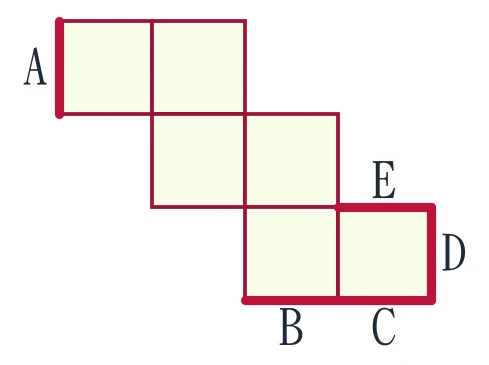
答案：B
1先想一想
💡提示 1
先找「轉角」：兩個正方形在同一個轉角相鄰時，摺起來它們的邊會碰在一起。
💡提示 2
一步一步把轉角的邊配對，配到最上面那一格的左邊時，看它會碰到哪一條。
2解題影片
助手 Y：想好了嗎？一起來看解題影片吧！3文字詳解
打開一步一步的算法
- 這是 2-2-2 階梯型展開圖。先摺相鄰的直角：同一個轉角的兩條邊會碰在一起。
- 依序摺好後，最上排左邊那一格的左邊（邊 A）會和最下排左邊那一格的底邊重合，也就是邊 B。
- 可以用紙剪下來摺摺看驗證。
答案：B
助手 Y：驗算通過，才算破案！展開圖：A 點會碰到誰？
數5-5 填充題 第 4 題下圖為正方體展開圖，摺成正方體時，A 點會和哪個點相碰？（ ）點
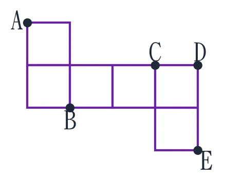
答案：C
1先想一想
💡提示 1
中間 4 格會圍成一圈側面，最左格和最右格是相鄰的。
💡提示 2
上面那一格摺成頂面時，它的左邊會貼到哪一格的上邊？
2解題影片
助手 Y：想好了嗎？一起來看解題影片吧！3文字詳解
打開一步一步的算法
- 中間一排 4 格會圍成正方體的 4 個側面，第 1 格和第 4 格相鄰。
- 上面那一格摺成頂面，它的左邊會貼到第 4 格的上邊，遠邊會貼到第 3 格的上邊。
- A 點是這兩條邊的交點，對應到第 3、4 格上邊的交點，也就是 C 點。
答案：C
助手 Y：驗算通過，才算破案！階梯積木的表面積
數5-6 應用題 第 8 題下圖的形體是由邊長 2 公分的小正方體疊成的，表面積是多少平方公分？
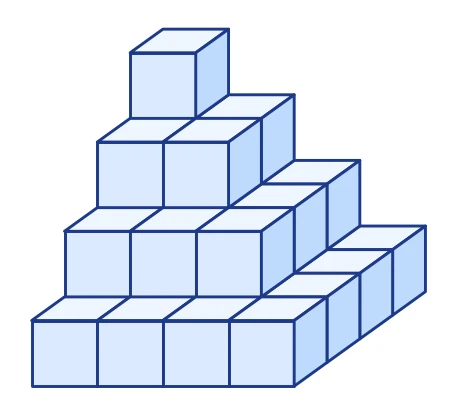
答案：288 平方公分
1先想一想
💡提示 1
不要一塊一塊算！從上、下、前、後、左、右 6 個方向看，各看到幾個小正方形？
💡提示 2
從上面看是 4 × 4；從前面看，從左到右每一排的高度是 4、3、2、1。
2解題影片
助手 Y：想好了嗎？一起來看解題影片吧！3文字詳解
打開一步一步的算法
- 由 6 個方向看：上、下各看到 4×4=16 個面。
- 前、後、左、右各看到 1+2+3+4=10 個面。
- 共 16×2+10×4=72 個小正方形面，每面 2×2=4 平方公分。
- 表面積 =72×4=288（平方公分）。
答案：288 平方公分
助手 Y：驗算通過，才算破案！挖了三個洞的正方體
數5-7 應用題 第 2 題一邊長 30 公分的正方體，由上到下、由左到右、由前到後共有三個底面為邊長 10 公分的正方形、高為 30 公分的長方體的洞，求此立體圖形的表面積是多少平方公分？
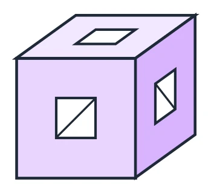
答案：7200 平方公分
1先想一想
💡提示 1
外表面：6 個大面各被挖掉一個 10 × 10 的洞。
💡提示 2
洞裡面的牆：中間 10 × 10 × 10 的地方三個洞交會，沒有牆；每個洞只剩兩段通道。
2解題影片
助手 Y：想好了嗎？一起來看解題影片吧！3文字詳解
打開一步一步的算法
- 外表面：30×30×6−10×10×6=5400−600=4800。
- 每個洞穿過中心時，中間 10×10×10 的部分是三個洞共用的空間，沒有牆。
- 每個洞剩兩段長 10 公分的通道，每段有 4 面牆：10×10×4×2=800，三個洞共 800×3=2400。
- 表面積 =4800+2400=7200（平方公分）。
答案：7200 平方公分
助手 Y：驗算通過，才算破案！一個頂點三個面的數字和
數5-7 應用題 第 5 題將下圖摺成一個正方體，相交同一頂點的三個面上的數字和最大是多少？
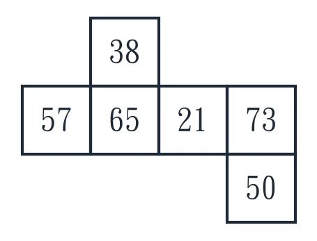
答案：180
1先想一想
💡提示 1
先找出三組相對面。相對面不可能交在同一個頂點。
💡提示 2
交在同一頂點的三個面，剛好是每一組相對面各挑一個。
2解題影片
助手 Y：想好了嗎？一起來看解題影片吧！3文字詳解
打開一步一步的算法
- 找相對面：57↔21、65↔73、38↔50。
- 交於同一頂點的三個面，一定是從每一組相對面各取一個。
- 每組取大的：57+73+50=180。
答案：180
助手 Y：驗算通過，才算破案！由展開圖求體積
數5-8 應用題 第 7 題下圖是一個長方體的展開圖，當摺成長方體時，它的體積是多少 cm³？
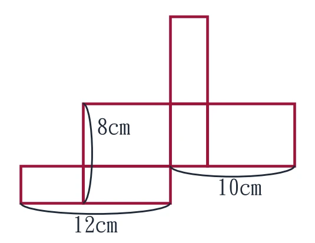
答案：105 cm³
1先想一想
💡提示 1
把長方體的三個邊叫做甲、乙、丙。8 cm、12 cm、10 cm 各是哪兩個邊加起來？
💡提示 2
三個式子全部加起來，等於（甲＋乙＋丙）的 2 倍。
2解題影片
助手 Y：想好了嗎？一起來看解題影片吧！3文字詳解
打開一步一步的算法
- 設長方體三邊為甲、乙、丙。由展開圖：甲+乙=8、甲+丙=12、乙+丙=10。
- 三式相加：(甲+乙+丙)×2=30，甲+乙+丙=15。
- 甲 =15−10=5、乙 =15−12=3、丙 =15−8=7。
- 體積 =5×3×7=105（cm³）。
答案：105 cm³
助手 Y：驗算通過，才算破案！拿掉 8 塊小正方體
數5-8 應用題 第 9 題如圖，將 64 塊邊長為 1 公分的小正方體堆砌成邊長為 4 公分的實心正方體。若拿掉圖中 8 塊綠色小正方體，則新立體圖形的表面積為多少平方公分？
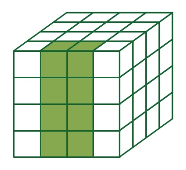
答案：100 平方公分
1先想一想
💡提示 1
拿掉以後，哪些面不見了？又有哪些新的面露出來？
💡提示 2
凹槽有一面後牆和左右兩面側牆，上、下是打通的。
2解題影片
助手 Y：想好了嗎？一起來看解題影片吧！3文字詳解
打開一步一步的算法
- 原來表面積 =4×4×6=96。
- 拿掉前面一條 2 格寬、4 格高的小正方體：前面少 8 個面、上面少 2 個、下面少 2 個。
- 凹槽露出新的面：後牆 8 個、左右兩邊牆各 4 個，共 16 個。
- 表面積 =96−8−2−2+16=100（平方公分）。
答案：100 平方公分
助手 Y：驗算通過，才算破案！塗色長方體切成小正方體
數5-8 專題討論 第 1 題將 4 個長、寬、高皆為 6cm、5cm、4cm 的長方體分別塗色，如下圖，第 1 個塗 1 面、第 2 個塗 2 面、第 3 個塗 3 面、第 4 個塗 4 面，塗色後再把所有長方體分割成邊長 1cm 的小正方體，分割完最多有幾個小正方體只有一面塗色？
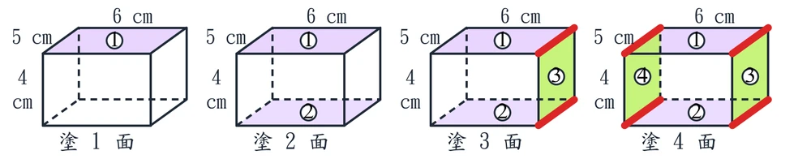
答案：210 個
1先想一想
💡提示 1
只有一面塗色的小正方體，在塗色面上，但不能碰到另一個塗色面。
💡提示 2
塗上下兩面時，高是 4，上下兩層不會互相碰到；塗到側面時，要扣掉和上下面重疊的那一排。
2解題影片
助手 Y：想好了嗎？一起來看解題影片吧！3文字詳解
打開一步一步的算法
- 塗 1 面（上）：6×5=30 個。
- 塗 2 面（上、下）：30×2=60 個。
- 塗 3 面（上、下、右）：上、下各 5×5=25，右面中間 5×2=10，共 25×2+10=60 個。
- 塗 4 面（上、下、左、右）：上、下各 4×5=20，左、右各 5×2=10，共 20×2+10×2=60 個。
- 全部共 30+60+60+60=210（個）。
- 「最多」是指選擇塗哪幾面：塗 1 面選最大的 6×5 面、塗 2 面選相對的上下兩面，只塗一面的小正方體才會最多（就是圖中的塗法）。
答案：210 個
助手 Y：驗算通過，才算破案！